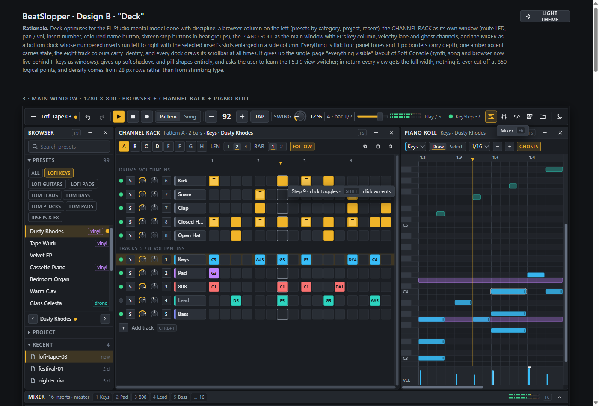
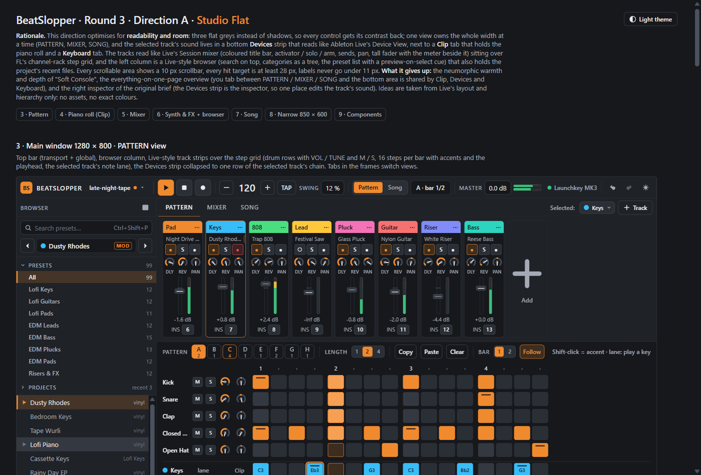
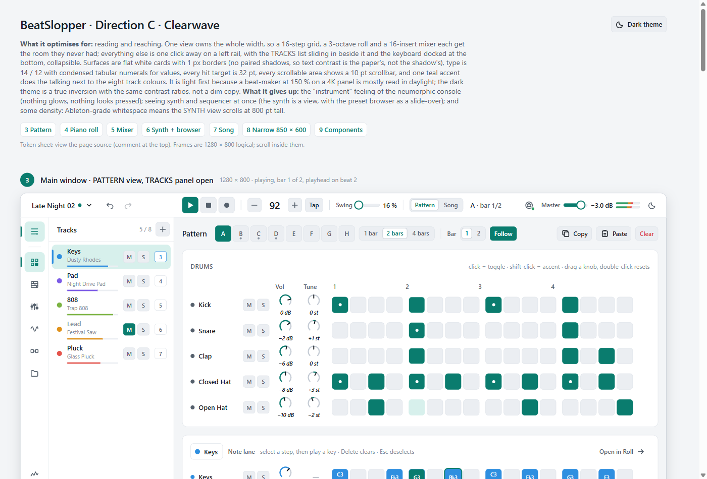

Three directions for the new look and layout. Each page has a token sheet at the top, a theme toggle, the real screens at 1280 x 800, a narrow 850 x 600 frame (the 150 % scaling case) and a component sheet. Open one, scroll through it, then tell the orchestrator which to build.

Browser column, channel rack (tracks + steps in one), piano roll as the main window, mixer as a bottom drawer, F5 to F9 views.

Browser column, session-style track strips over the step grid, Clip | Devices | Keyboard tabs at the bottom.

Left icon rail with a sliding tracks panel, one full-width view at a time, teal accent, cards with hairlines.